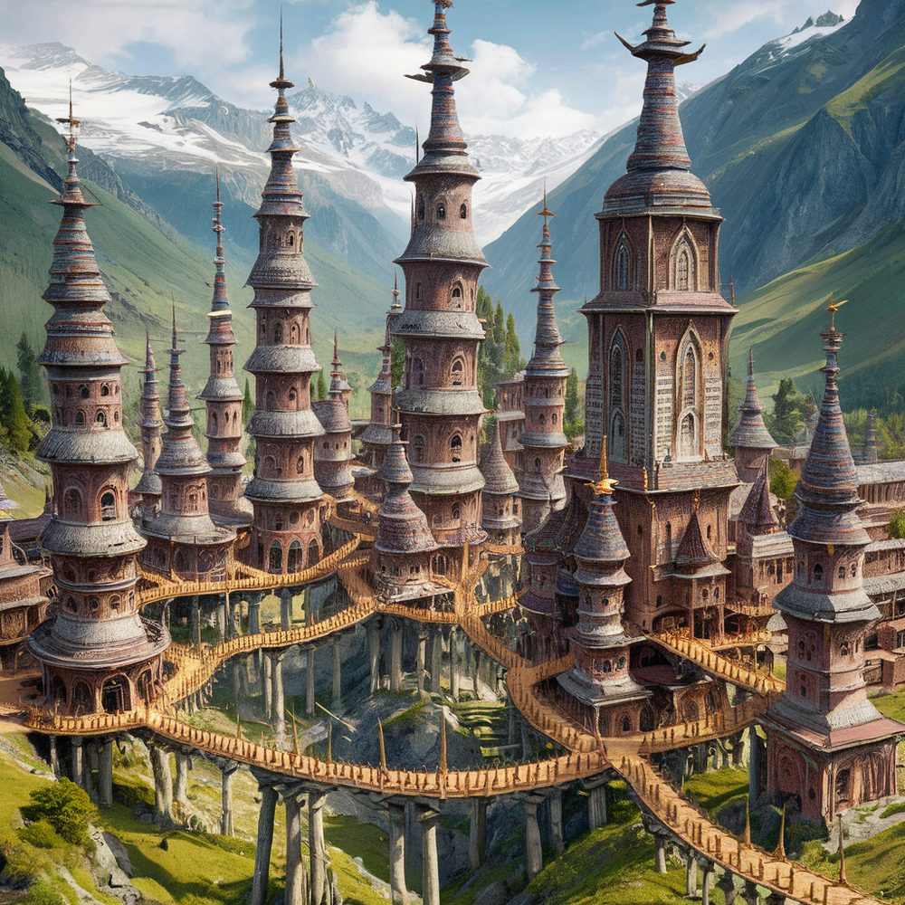

The New Academy
The New Academy is the foremost centre of magical learning in the present age, and a self-governing scholarly enclave within The League.

It stands in the Whiterash valley, high in the Sunshield Mountains: a mini-city of towers raised in permanent snow, warmed by geothermal works and linked by tunnels bored beneath the ice, so that its scholars can cross the whole campus without setting foot in the open. The Academy lies within the territory of one of the League’s duchies but is effectively autonomous, governing its own affairs under a head called the Provost.
The arrangement is uneasy. Other League rulers are wary of a concentration of magical power they do not control, but the host duchy profits handsomely from the Academy’s presence and guards its independence.
Teaching and trade
Rank and instruction are organised by the schools of magic, each under a master; the current Master of Enchantment is Dafne. The Academy deals in artefacts and arcane expertise, and a serious enquiry into a magical problem — the provenance of an old weapon, the lifting of a curse — will often end in a referral here, or to a practitioner the Academy can name.
See also
- The League — the alliance within which the Academy sits
- Arcane Order — the fallen magocracy whose role as the centre of magical learning the Academy now distantly echoes
- Cosmology — the planar theory taught in its schools
- NPCs — Dafne, Master of Enchantment